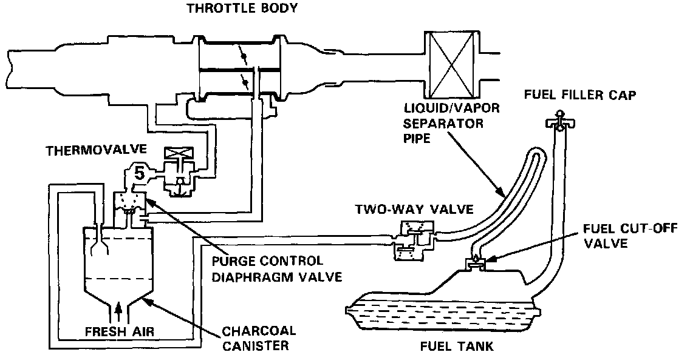
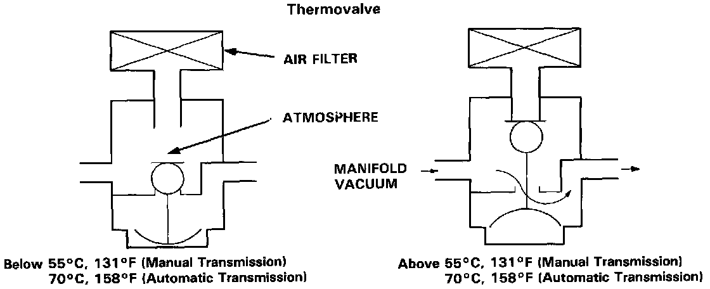

Sedan

Description
The evaporative controls are designed to minimize the amount of the fuel vapor escaping to the atmosphere. The system consists of the following components:
A. Charcoal Canister
A canister for the temporary storage of fuel vapor until the fuel vapor can be purged from the canister into the engine and burned.

B. Vapor Purge Control System
Canister purging is accomplished by drawing flesh air through the canister and into a port on the throttle body. The ported vacuum is controlled by the Purge Control Valve.
When the coolant temperature is above 55°C, 131°F (Manual Transmission) or 70°C, 158°F (Automatic Transmission), the thermovalve directs manifold vacuum to the purge control valve.
When the coolant temperature is below 55°C, 131°F (Manual Transmission) or 70°C, 158°F (Automatic Transmission), the thermovalve does not provide manifold vacuum to the purge control valve.
C. Fuel Tank Vapor Control System
The Fuel Cut-Off Valve and Liquid Vapor Separator prohibit liquid fuel entering the two-way valve.
When fuel vapor pressure in the fuel tank is higher than the set value of the two-way valve, the valve opens and regulates the flow of fuel vapor to the canister.